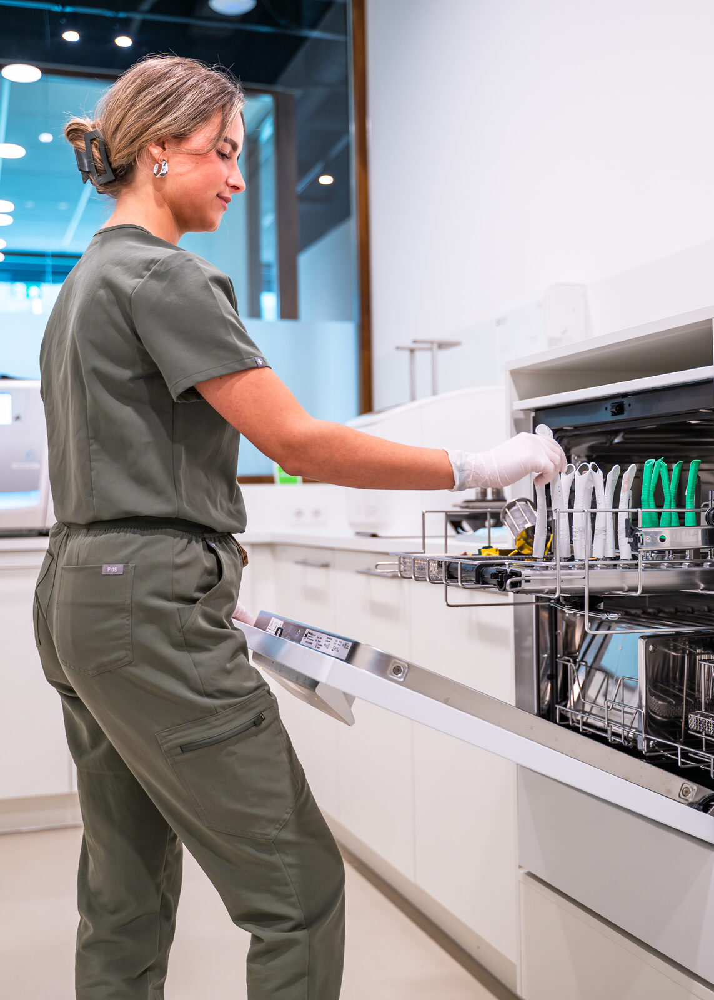

Bij ons houd je niet alleen de afzuiger vast. We ondersteunen je in cursussen en helpen je zelfstandige handelingen te ontwikkelen, zodat je steeds zelfstandiger werkt en elke dag een stap verder komt.

We willen dat je meer kunt dan assisteren alleen. Daarom investeren we in jou: met opleidingen, begeleiding op de werkvloer en de ruimte om steeds meer zelf te doen. Zo bouw je aan een vak waar je trots op bent, in jouw tempo.
Je krijgt de ruimte en het budget om cursussen te volgen. Wil je een handeling écht onder de knie krijgen? Dan maken we dat mogelijk.
Je leert van collega's die naast je staan. Elke nieuwe handeling oefen je onder begeleiding, tot je het zelfstandig kunt.
Je begint met meekijken en groeit door naar zelfstandig werken. Geen sprong in het diepe, maar rustig opbouwen met vertrouwen.
Van digitale scans tot noodkronen en fotografie. Dit is het vakwerk dat je bij VLIJT stap voor stap leert beheersen.
Digitale afdrukken maken met de intraorale scanner. Comfortabeler voor de patiënt, preciezer voor het werk.
Orthodontische spalkjes plaatsen en bijstellen, met oog voor detail en precisie.
Zelfstandig verdoven, zodat de behandeling soepel en zonder oponthoud doorloopt.
Het werkveld droog en schoon houden, voor een beter en veiliger behandelresultaat.
Tijdelijke kronen vervaardigen en plaatsen, direct in de praktijk als het nodig is.
Röntgenopnames maken en beoordelen op kwaliteit, zodat de diagnose klopt.
Klinische foto's van het gebit voor het dossier, de diagnose en het overleg.
Portretten voor voor-en-na en een compleet beeld van de patiënt.
Attachments plaatsen voor aligners en klikgebitten, nauwkeurig en volgens plan.
En dit is geen vaste lijst. Groeit je interesse een kant op? Dan kijken we samen hoe je je daarin verder ontwikkelt.
Wie wil doorgroeien, krijgt bij ons de ruimte. Naar meer verantwoordelijkheid, een specialisatie of een nieuwe rol. Je ontwikkeling stopt niet, en die van ons ook niet.
Bekijk de open vacatures of solliciteer direct. We maken graag kennis met je.